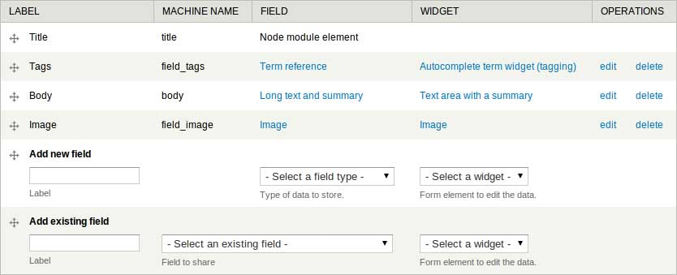
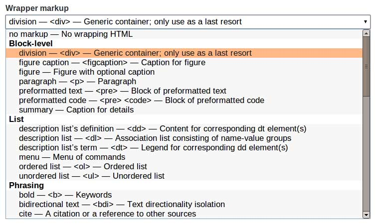

Accessible Theming
Dan Mouyard
Senior Interface Engineer
Focus
The power of the Web is its universality. Access by everyone regardless of disability is an essential aspect.” — Tim Berners-Lee Inventor of the World Wide Web
Progressive Enhancement
Drupal Core
HTML
CSS
WAI-ARIA
Drupal Core
Helper Classes
- element-hidden
- element-invisible
- element-focusable
.element-invisible {
clip: rect(1px, 1px, 1px, 1px);
position: absolute !important;
}
.element-invisible.element-focusable:active,
.element-invisible.element-focusable:focus {
clip: auto;
position: static !important;
}
Skip Links
The first links on every page which allow users to skip directly to other sections of the same page, most often to the main content.
html.tpl.php
<div id="skip-link">
<a href="#main-content"
class="element-invisible element-focusable">
<?php print t('Skip to main content'); ?>
</a>
</div>
page.tpl.php
<a id="main-content"></a>
page.tpl.php
<div id="main-content">
Forms
All form elements need to have either a label or a title attribute. Drupal's Form API uses the #title property to set these.
$form['element'] = array(
'#type' = 'textfield',
'#title' => t('Description'),
);
Form API: Title Display Property
- before
- after
- invisible
- attribute
$form['element'] = array(
'#type' = 'textfield',
'#title' => t('Description'),
'#title_display' => 'invisible',
);
HTML
<article>
<h1>Article Title</h1>
<footer>
<time datetime="2012-07-28">July 28, 2012</time> by Author
</footer>
<figure>
<img>
<figcaption>Image caption</figcaption>
</figure>
<p>
A paragraph of text with <strong>important</strong> and
<em>emphasized</em> words using semantic
<abbr title="HyperText Markup Language">HTML</abbr>
elements.
</p>
</article>
<div class="article">
<div class="title">Article Title</div>
<div class="byline">
July 28, 2012 by Author
</div>
<div class="figure">
<img>
<div class="caption">Image caption</div>
</div>
<div class="p">
A paragraph of text with
<span class="bold">important</span> and
<span class="italic">emphasized</span> words using
non-semantic HTML elements.
</div>
</div>
Fences Module
Manage Fields
Define Field Wrapper Markup
Document Order
is the
Tab Order
page.tpl.php
- Header
- Logo
- Site Name and Slogan
- Navigation
- Main Menu
- Secondary Menu
- Breadcrumbs
- Main
- Content
- First Sidebar
- Second Sidebar
- Content
- Footer
page.tpl.php
- Header
<header>- Logo
- Site Name and Slogan
- Navigation
<nav>- Main Menu
- Secondary Menu
- Breadcrumbs
- Main
- Content
<section> - First Sidebar
<section> - Second Sidebar
<section>
- Content
- Footer
<footer>
Images
Alternative Text
<img alt="Visit the Capitol" src="capitol.jpg" />
Alt Attribute
- All
<img>elements need an alt attribute - Decorative Image = Empty
<img alt="" /> - Content Image = Describe Image
- Link Image = Describe Destination
Viewport
Prevents Zooming
<meta name="viewport" content="initial-scale=1.0, minimum-scale=1.0, maximum-scale=1.0">
Prevents Scrolling
<meta name="viewport" content="initial-scale=1.0, user-scrollable=no">
Recommended Viewport Meta Tag
<meta name="viewport" content="width=device-width">
CSS
Image Replacement
<h2 class="capitol">Visit the Capitol<h2>
.capitol {
background: url(capitol.jpg) no-repeat;
color: transparent;
font: 0/0 a;
height: 68px;
text-shadow: none;
width: 102px;
}
Styling Links
- Make them obvious
- Design all states (hover, focus, active, visited)
- Make them easy to click
Combine :hover and :focus
a:hover,
a:focus {
color: #bada55;
}
Link Outline
a {
outline: 0;
}
Link Outline
a:hover,
a:active {
outline: 0;
}
a:focus {
outline: thin dotted;
}
Bigger Links
a {
margin: -2px;
padding: 2px;
}
Typography
A printed work which cannot be read becomes a product without purpose.” — Emil RuderTypography, A Manual of Design
Choose the right fonts
Pay attention to the measure
Use appropriate leading
Create a nice hierarchy
Font Size
- Use the default font size for body copy
- 16px on a monitor equals 12pt in a book
- Small text causes eye strain
- Read the text while designing
Text Alignment
- Left-align body text
- Fully justified text creates rivers
- Easier to scan text
Color Contrast
- Increases Readability
- Smaller text needs higher contrast
- Too much contrast affects dyslexic users
Color Tools
- Color Contrast
- Online Color Filters
- Colorblindness Simulator
Responsive Layouts
- Use media queries to adjust layout
- Set breakpoints based on content, not devices
- Accessible content when zoomed in*
Media Query
body {
margin: 0 auto;
max-width: 35em;
padding: 0 1em;
}
@media screen and (min-width: 35em) {
body {
max-width: 60em;
}
}
WAI-ARIA
Web Accessibility Initiative
Accessible Rich Internet Application
Defines a way to make Web content and Web applications more accessible to people with disabilities. It especially helps with dynamic content and advanced user interface controls developed with Ajax, HTML, JavaScript, and related technologies.
page.tpl.php
<div id="header">
<div id="navigation">
<div id="main-content">
<div id="footer">
page.tpl.php
<header role="banner"">
<nav role="navigation">
<section id="main-content" role="main">
<footer role="contentinfo">